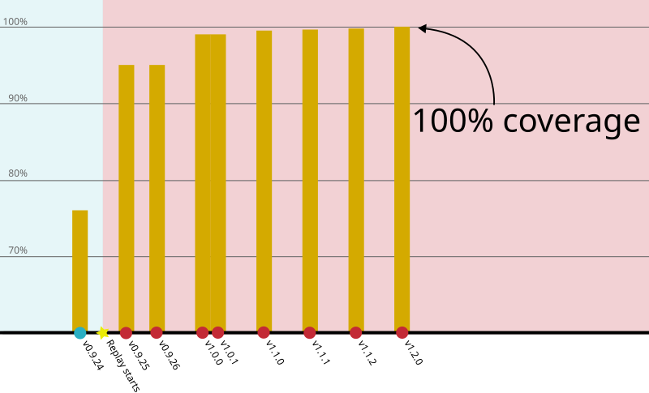
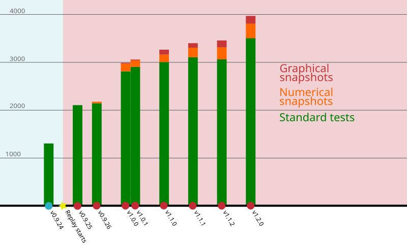

Luminescence Release 1.2.0
We are very excited to announce the release of version 1.2.0 of the Luminescence R package. This is a major release that, once again, comes exactly 3 months after our previous release.
There are a lot of exciting things to discuss about this release, many of which related to consistency in function argument names and behaviour, but also new functionalities and some quality of life improvements. In total we solved a total of 112 issues in 415 commits.
Breaking changes
Decisions to make breaking changes are never taken lightly, as we are aware of the potential problems and frustration that may cause to users. However, they are at times inevitable, if we want to make the package more consistent and future-proof.
In many cases, it’s possible for us to devise some way to keep both old and new behaviour alive simultaneously (at least for a while), but as it happens, this was not a possibility for the type of changes we had to introduce this time.
Already almost two months ago we have written a post about the breaking changes that we this release brings. So I invite you to make yourself familiar with them, so that you’ll be able to recognise if you could be affected by them.
New functions
This release adds two new functions to the already vast set of functionality provided by the package.
normalise_RLum()
The new normalise_RLum() enables to normalise RLum.Data.Curve,
RLum.Data.Spectrum, RLum.Data.Image and RLum.Analysis objects in a
consistent way. This functionality is not entirely new to the package, as it
was already used in some of the plotting functions (such as
plot_RLum.Data.Curve()). However, it was not possible to normalise an object
for further analyses, but now the new function exposes this functionality.
A number of different normalisation methods are implemented, and can be
controlled via the norm argument. The default setting (which corresponds to
norm = "max" or norm = TRUE) corresponds to normalising to the highest
value, and this is what is usually meant by normalisation.
However, there are instances in which it may be helpful to normalise according
to something different, such as the minimum ("min"), "first", or "last"
value; or, perhaps, according to a numerical value set manually (for example,
norm = 1.2).
Setting norm = "huot" activates a normalisation approach suggested by
Sebastien Huot, which defines a background by taking the last 20% of the
values and normalises according to:
y = (y - median(background)) / (max(y) - median(background))
Entirely new for this release is norm = "intensity", which normalises to
the channel length. This currently does not support RLum.Data.Image objects.
read_BINXLOG2R()
Risø readers generate a log file alongside a BIN/BINX file. The log file stores enough information to allow recovery of the BIN/BINX files if they get lost or corrupted.
The new read_BINXLOG2R() function can process these log files and import
them as standard RLum type objects. Then, it’s possible to regenerate the
BIN/BINX file with write_R2BIN() function.
The log file format is not well-defined, so there are a number of caveats for this function. First of all, only TL, OSL and IRSL formats are recognised and implemented, while all other formats will be ignored. For TL curve extraction, the function always assumes to be dealing with BIN-files version 3, which should be fine in general, but may become problematic for dedicated curve analyses. Moreover, the format of the log may change without warning through time.
Theefore the function is provided as a last-attempt resort to recover some otherwise lost data, but with no guarantees that it will work in all cases.
New ways of specifying integrals
In issue 1290 we recognised that the way of setting integrals was highly inconsistent in the package. Over the 12 functions that could deal with integrals, we spotted in total 8 different combinations of argument names and behaviour. Moreover, integral arguments were always validated in ad-hoc ways, and with inconsistent level of carefulness.
For example, analyse_SAR.CWOSL() used to require four arguments
(signal.integral.min, signal.integral.max, background.integral.min and
background.integral.max), which could be either one or two values, with the
second value being used for the Tx curves. On the other hand, analyse_baSAR()
used signal.integral and background.integral (and, separately,
signal.integral.Tx and background.integral.Tx) which could be vectors.
This called for some consolidation.
In v1.2.0 the new argument names will be signal_integral and background_integral
(with signal_integral_Tx and background_integral_Tx where supported). In
all cases, they accept vector inputs. So, for example, to consider the first
5 channels for the signal and channels 900 to 1000 for the background, the
input should be specified as
signal_integral = 1:5, background_integral = 900:1000
This uniformity allows us to validate integrals more consistently throughout the package, having moved all the validation steps into a single internal helper function.
This change has been quite invasive, especially as we tried to maintain backward compatibility. This means that using the old argument names will still work, although it will generate a deprecation warning. However, we do not support a mix of old and new names: we don’t see why anyone would want to do that, so in that case we stop with a clear error message.
Converting from the old to the new style of arguments is in general straightforward, and consists of two simple steps:
- Rename the arguments: often this means replacing
.with_and removing.minor.maxfrom the argument name, if present. - Set the argument values: this requires a little more attention, as in some cases the old arguments used to specify the extremes, but now we need the whole range.
Note that now specifying signal_integral = c(1, 5) will trigger a warning,
as it’s likely that this was meant to be 1:5. No warning is produced if
the two values are consecutive, such as in c(1, 2).
An unexpected, but very welcome, outcome of the work of converting functions
to the new style was discovering that analyse_Al2O3C_ITC() and
analyse_Al2O3C_CrossTalk() didn’t actually use the integrals in the
computations. This has now been fixed, so that future computations with these
functions will be correct.
Choosing channels according to time/temperature
Until now, with the exception of analyse_SAR.TL(), there was no way to
specify integrals other than by channel. However, it may be more convenient
to users to be able to specify integrals in terms of seconds or degree Celsius.
In issue 1396, we have added the new integral_input option to all
functions that use integrals. This defaults to "channels", but can also be
set to "measurement", in which case the values given to signal_integral
and background_integral are interpreted as temperature (for TL curves) or
time (for OSL/IRSL curves). In this latter case, the values provided are
matched automatically to the measurement range of the object being analysed,
and from that we can work out the corresponding channels.
This should make life a bit easier and less error-prone in case curves were analysed with differing channel resolutions.
Improvements in analyse_SAR.CWOSL()
These are a number of noteworthy changes affecting analyse_SAR.CWOSL() for
the better.
The most directly user-visible is that the function will now automatically
remove the technical curves generated when reading XSYG files. These are marked
by an _ at the start of their recordType (as described in the
breaking changes post). This means that users have one fewer step to
do before being able to run the function.
The new dose_rate_source argument allows to specify the source dose rate
(typically Gy/s). When that is specified, doses will be converted to grays,
and plots will display values in Gy rather than seconds. This should avoid
some annoying work on the part of the user, which was previously inconvenient.
Given to enhancements in calc_OSLLxTxRatio, we could add a new signal-to-noise
ratio rejection criterion. The default threshold (currently at 50) can be
controlled by setting rejection.criteria = list(sn.ratio = 75). It is also
possible to change the reference curve from the natural to any other curve,
for example rejection.criteria = list(rn_reference = "R0").
Speaking still of rejection criteria, it is now possible to consider value
uncertainties in the computation of some rejection criteria (currently
recycling.ratio, recuperation.rate and exceed.max.point) by setting
rejection.criteria = list(consider_uncertainties = TRUE). By default,
uncertainties are not considered to preserve the current behaviour. However,
this can be of help to distinguish cases in which an aliquot should be
rightfully rejected from cases in which the computed value has an error margin
that includes the threshold, and perhaps should not have been rejected.
Validation of input file names
Another behind-the-scenes consolidation work concerned the validation of file
names. The read_*() functions behaved slightly differently with regards what
they accepted as file argument: in some cases they accepted a filename or a
list of filenames, other times multiple filenames and lists but also directory
paths, and in a few cases the input could also be a URL.
In issue 1393 we introduced a new internal helper to validate file names. This allowed us to uniform the checks performed and the error messages produced. More importantly, this allowed us to make the behaviour of all import functions more consistent.
This brought us to discover that read_XSYG2R() and read_BIN2R() had a
different approach with regard to directory traversal: when the file argument
listed a directory path, the first one traversed it recursively, but the
second didn’t. After the consolidation work, they both work recursively.
Test coverage at 100%
This release sees the completion of an important milestone for the project: our test coverage has reached 100%! The chart below summarizes the progress of the last 18 months of work, as presented during our second REPLAY meeting.

At the start of the REPLAY project, coverage was already at 75%, which is already very good, compared to project of similar size. With version 0.9.25, released just over a month after the start of the project, brought coverage to 95%. By the time we released Luminescence 1.0.0, coverage was at 99.2%.
Slowly but surely, the number of lines still to reach would go down. In our previous release (v1.1.2), coverage was at 99.9%, which meant that there were only 5 lines that could not be reached by our tests. With a little code refactoring and some additional tests, we reached the long-awaited goal of 100%.
At that point we could tighten up the test-coverage continuous integration workflow so that it would fail whenever any line of code does not get any coverage. We certainly didn’t expect to see our first run under this new regime to fail, but that’s exactly what happened.
It turns out that our online coverage-tracking tool counted lines differently
from the covr package, and in reality there were still 6 lines with no
coverage, all of the form:
if (condition) a else b
These were easily addressed, and since then we have always stayed at 100%! And thanks to the workflow changes mentioned before, regressions of this metric will not go unnoticed in the future.
This milestone is purely symbolic: having complete coverage doesn’t mean that our code is perfect, nor that our tests are good enough. It’s just a way of guiding the developer to pay attention to code paths that are not tested yet or that, perhaps, at some point become redundant.
In this release there has been also a massive increase (over 13%) in number of tests, with the numerical snapshots having grown the most (by 20%):

Other changes
-
With a number of [code][i263] [contributions][1266] by Andrzej Bluszcz,
read_Daybreak2R()has been made way more correct and reliable. Before, our implementation was based on a very small number of example and some form of reverse engineering. Andrzej’s insight and skill have brought new life into this function. -
A number of improvements have been made to
calc_MinDose(), in particular with respect to its bootstrap mode. Some of the quantities computed during bootstrap were not correctly stored in the resulting object, and also the output was somewhat misleading. This led also to a number of internal fixes that revealed potential errors in its sister function,calc_MaxDose(). We still have some work to do to fully implement the original approach by Cunningham and Wallinga (2012), but this was a big already a noticeable improvement. -
The package no longer depends on
RcppArmadillo. This was previously used because some of the most computationally expensive code inanalyse_IRSAR.RF()is written in C++, andRcppArmadilloprovided a C++ implementation of thesample()function. Due to work in issue 1254 we’ve been able to remove this dependency, as well as halving the size of C++ object file and cutting the size of theLuminescence.soshared library by 20%.
Get in touch!
Some of the changes discussed above (and a few more that we do not have enough time to recount), come directly from user contributions or bug reports. So it’s important to get in touch with us whenever something doesn’t quite work according your expectations, or you believe (or just dream) that they could be better.
Whenever flaws (however small) are pointed out to us, we not only try to fix the issue at hand, but in doing so we often end up discovering other possible improvements. So, don’t be shy and get in touch (via GitHub or via email): the gains will be experienced not only by you, but by the entire community.
Upcoming work
We have some new functionality planned for the next release, along with the usual robustness and correctness fixes that we may discover as we continue scrutinizing the package codebase. If we get to replicate what happened for the 1.1.0 series of releases, then we have a period of relative stability (no breaking changes!) ahead of us. Of course, plans may change and we may not be able to keep our promise, but right now that’s what the next few months look like.